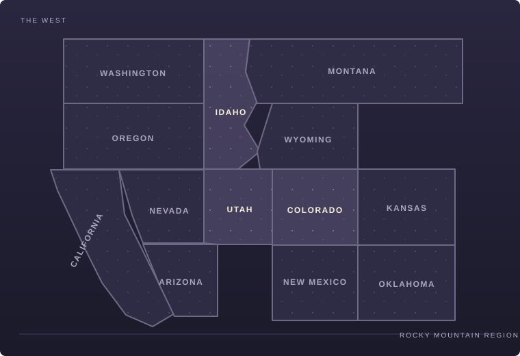

Snowboarding
Resorts & season totals.
Visits and recorded stats from days on the mountain.
Slopes activity
Season totals
From 75 Slopes exports. Days count unique dates; GPS-derived totals are rounded estimates.
Map
Resorts

Pins show recorded days at each resort. Expand an entry for visit dates.